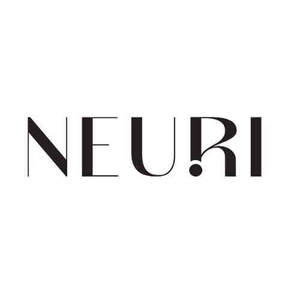

Trade Mark Journal No.2025/014 4 April 2025
UK00004148665 16 January 2025 (3)

- Class 3
- Cosmetic creams for the skin; Body washes; Moisturisers [cosmetics]; Deodorant soap; Anti-aging creams [for cosmetic use]; Lotions for the skin; Skin lotions; Cosmetics for use in the treatment of wrinkled skin; Non-medicated skincare preparations; Cosmetic creams for skin care; Car shampoos; Pressed face powder; Facial cream; Skin moisturizer; Skin balms [cosmetic]; After-sun lotions; Cuticle softeners; Face powders; Face wipes; Lip coatings (Non-medicated -); Oils for hair conditioning; Non-medicated hair shampoos; Skin cleansing cream; Shower and bath gel; Hair relaxers; Hair colourants; Anti-wrinkle cream; Toilet soap; Beauty care cosmetics; Skin emollients; Body shampoos; Hair gel; Conditioners for treating the hair; Soap; Hair conditioners for babies; Skincare preparations; Bath and shower gels; Lip gloss palettes; Skin toner; Bath and shower gel; Balms (Non-medicated -); Lip liner; Skin creams [for cosmetic use]; Liquid soaps for hands and face; Skin cleansing lotion; Exfoliants for the cleansing of the skin; Hand scrubs; Loose face powder; Saddle soap; Shampoos for babies; Liquid bath soap; Body milk; Skin care cosmetics; Face and body glitter; Skin cleansing cream [non-medicated]; Baby shampoo mousse; Vehicle shampoos; Hair styling lotions; Exfoliants for the care of the skin; Aftershave balms; Hair balms; Facial cleansers [cosmetic]; Lip rouge; Bath soap; Colour cosmetics for the skin; Beauty balm creams; Laundry soap; Face scrub; Cosmetic products in the form of aerosols for skincare; Facial creams [cosmetics]; Skin lotion; Soap powder; Lip makeup; Baby bottom balm; Shower foams; Skin balms (Non-medicated -); Carbolic soaps; Skin hydrators; Hair lotions; Milky lotions for skin care; Soap powders; Shower creams; Carpet shampoo; Hair emollients; Anti-aging moisturizers used as cosmetics; Bath gel; Hair conditioners; Hair oils; Aftershave moisturising cream; Bath gels; Face powder; Body deodorants; Body butters; Body creams; Shower and bath foam; Non-medicated pet shampoos; Shaving balms; Lip balms [non-medicated]; Anti-aging moisturizers; Skin cleansers; Hair moisturisers; Face wash [cosmetic]; Hair balm; Lip protectors [cosmetic]; Bath cream; Shampoo; Hair conditioner bars; Body powder; Shower cream; Lip gloss; Cosmetics; Body masks; Body and facial oils; Handmade soap; After-shave balms; Face blusher; Lip glosses; Shampoo bars; Shampoos for human hair; After-sun lotions [for cosmetic use]; Lip polisher; Soap sheets; Hair conditioner; Toning lotion, for the face, body and hands; Body soap; Beauty lotions; Face oils; Fabric softeners; Liquid soap; Beauty serums; Lip liners; Soaps; Body souffle; Bath soaps; Skin conditioners; Fabric softener; Anti-ageing moisturiser; Shaving cream; Bath oils; Hair texturizers; Lip pomades; Bath and shower preparations; Bars of soap; Face powder (Non-medicated -); Cosmetic soap; Soap (Cakes of -); Face and body creams; Body oils; Aloe soap; Skin moisturiser; Creams for the skin; Anti-aging cream; Hair moisturizers; Sunscreen cream; Sugar soap; Bar soap; Anti-aging skincare preparations; Lip balms; Blemish balm creams; Bath powder; Lip balm [non-medicated]; Bath salts; Skin moisturizers; Body spray; Anti-ageing serums for cosmetic purposes; Lip stains [cosmetics]; Pet shampoos; Moisturising body lotion [cosmetic]; Fabric softener for laundry use; Lip neutralizers; Hair shampoo; Skin masks; Face powder [for cosmetic use]; Skin care creams [cosmetic]; Non-medicated skin balms; Beauty serums with anti-ageing properties; Skin recovery creams [cosmetics]; Shaving balm; Bath lotion; Shower soap; Body mist; Make-up for the face and body; Preparations for the bath and shower; Body wash; Shaving soap; Anti-ageing creams; Skin soap; Body scrub; After-sun oils [cosmetics]; Face masks; Face packs; Dandruff shampoo; Bath and shower foam; Skin lightening creams; Granulated soap; Cosmetic bath salts; Waterless shampoo; Preparations for use in the bath or shower; Skin care lotions [cosmetic]; Skin moisturizer masks; Foams for use in the shower; Detergent soap; Antiperspirant soap; Cosmetic face powders; Face and body masks; Hair styling gel; Skin creams; Body scrubs; Non-medicated shampoos; Beard balm; Moisturizing creams; Body oil; Shampoos; Sunscreen creams [for cosmetic use]; Lip cosmetics; Shave balm; Hand cream; Cosmetics for protecting the skin from sunburn; Cosmetic creams for dry skin; Anti-wrinkle creams [for cosmetic use]; Cleansing balm; Facial moisturisers [cosmetic]; Foams for the bath; Anti-aging creams; Skin creams [cosmetic]; Non-medicated balm for hair; Moisturisers; Skin cleansers [cosmetic]; Face gels; Baby shampoo; Skin foundation; Face creams; Body polish; Moisturising skin lotions [cosmetic]; Hair pomades; Body and facial butters; Hand and body butter; Bath foams; Shower oils; Skin toners; Hair serums; Lip cream; Make-up preparations for the face and body; Hair moisturising conditioners; Lip pencils; Bubble bath; Fabric brighteners; Foot balms (Non-medicated -); Liquid soap for dish washing; Body fragrances; Body gels; Suncare lotions [for cosmetic use]; Moisturizing preparations for the skin; Hair lighteners; Moisturising creams, lotions and gels; Non-medicated lip balms; Creams for tanning the skin; Face wash; Skin moisturizers used as cosmetics; Face and body lotions; Soap (Antiperspirant -); Soap (Deodorant -); Anti-ageing creams [for cosmetic use]; Bath bombs; Skin make-up; Hair lotion; Cleaning masks for the face; Cosmetics for the treatment of dry skin; Bath milk; Hair shampoos; Skin texturizers; Body moisturisers; Skincare cosmetics; Dry shampoos; Fabric softener for laundry; Lip conditioners; Sun protectors for lips; Acne cleansers, cosmetic; Lip balm; Skin moisturisers; Mattifying gel cream; Perfumed soap; Liquid soap for laundry; Suncare lotions; Face paints; Emollient shampoos; Hair rinses; Face scrubs (Non-medicated -); Shower and bath preparations; Loofah soaps; Body lotions; Baby hair conditioner; Cakes of soap; Non-medicated bath salts; Waterless soap; Hand soap; Body emulsions; Face glitter; Lip protectors (Non-medicated -); Body butter; Fabric softeners for laundry; Face packs [cosmetic]; Body milks; Body cream; Soap products; Lip coatings [cosmetic]; Body lotion; Almond soap; Cosmetic moisturisers; Skin cream; Conditioners for use on the hair; Waterless shampoos; Bath creams; Moisturising skin creams [cosmetic]; Exfoliating scrubs for the face; Lip tints; Make-up for the face; Time-release solid drain detergent; Face cream (Non-medicated -); Face powders [for cosmetic use]; Skin toners [cosmetic]; Creams (Soap -) for use in washing; Hair mousse; Aftershave balm; Shampoo for animals; Oils for the skin; Lip care preparations; .
Lina Mercer